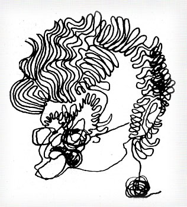

|
By
Robin Howells
in Melbourne
MOVES AIMED at
preparing the way for Bob Hawke to obtain a safe seat in
parliament are still continuing in Victoria. However they
received a serious setback during last friday's meeting of the
administrative committee of the Victorian ALP branch when a
motion intended to make it easier for Hawke to stand was
overwhelmingly defeated when the socialist left and the right
groups combined to defeat it.
Strongly supported by state parliamentary leader Clyde Holding,
the motion started by pointing out the obvious fact that due to
the electoral system the Labor vote is concentrated in limited
areas. It went on to say that this restricts the number of safe
seats available to party members.
After sweetening the pill by acknowledging that some
parliamentarians had to make a big contribution to the movement
it then said that a number of them had reached an age or a stage
of their careers where their contribution to the ALP achieving
government would be of limited significance.
The defeated motion concluded by calling on members of the
federal and state parliament to seriously consider their
positions.
Since Hawke has said that he would not stand against a sitting
member it was thought that if this motion was passed it would
provide an opportunity for him to seek endorsement for a safe
seat.
Because there were some absentees from the centre/unity strength
they did not have the all-important numbers to defeat the
combined votes of the socialist left and the right on the motion
that Holding saw as a means of preparing a path for Hawke's
entry to federal parliament.
The defeated motion was part of the strategy to try to
"encourage" a sitting ALP member to stand down prior
to the 1978 elections.
Hawke's supporters in the Victorian branch including Clyde
Holding, Bill Landeryou and Peter Redlich are all trying to get
a seat for him as soon as possible. Their strategy is to get him
into parliament quickly so that he can be eased into the shadow
cabinet and be in a position where he can seek the leadership of
the parliamentary party prior to the next federal elections.
They're also hoping to get as many Hawke supporters as possible
into federal parliament in the same election. It's reliably
reported that candidates and potential candidates are being
sounded out to see if they will support Hawke as ALP leader.
Another problem facing the "Hawke for leader" group
involves his close friend and promoter Bill Landeryou. |
 |

Last friday it
was pointed out that Landeryou is a member of two powerful
Victorian ALP branch committees - administration and public
selection. Under the rules of the branch he is allowed to be on
only one committee and before the next administrative committee
meeting next friday Landeryou must decide which one he will
resign from while still retaining the maximum influence to
benefit Hawke.
I
understand that Race Mathews, former member for Casey and now
private secretary to Clyde Holding, has bought a home in the
inner Melbourne suburb of North Fitzroy and plans to move there
within two months from the outer eastern suburb of Croydon.
Mathews confirms that he will not be seeking reendorsement for
Casey because he will be outside the electorate.
It
also raises the possibility of him standing for Batman because
he will soon be living in the electorate. When I put the
question to him this week he assured me that he does not intend
to seek ALP endorsement against the sitting member Horrie
Garrick, who will be 60 by the time of the 1978 elections.
Garrick has been the member for Batman since 1969 and it has
been suggested a number of times that he could be
"encouraged" to stand down to enable Hawke to enter
parliament. So far Garrick has indicated that he is only
interested in continuing his parliamentary duties.
Because he has been mayor of Collingwood twice and is a member
of the Collingwood football club Garrick is well versed in the
numbers game perfected in the rough and tumble atmosphere of
Carringbush. When the first round of speculation started
suggesting that Garrick would be moving aside in Batman for
Hawke 28 out of the 30 Batman ALP branch members comprising the
preselection panel signed letters to the national press
criticising the speculation. They pointed out that whoever
sought preselection for Batman would need local support and made
it quite plain that they wouldnt welcome any attempts at having
an outsider foisted on them.
Since he won the seat in 1969 Garrick has set up an office in
the electorate and worked hard to increase the ALP majority. In
1969 the ALP won 53 percent of the vote and by 1974 Garrick
increased this to 61.4 percent. With that sort of performance he
looks fairly safe. |